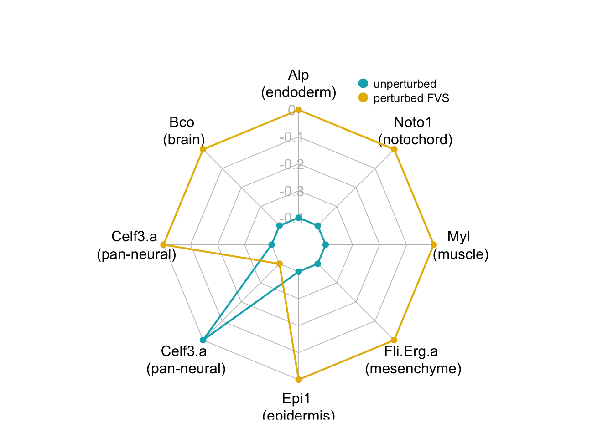

5 Cell Fate Specification in Ascidian Embryo
This section contains instructions to reproduce the results of simulating FVS control node perturbations in a model of ascidian embryo cell specification. You can read the original report here: link
The input data, nextflow pipeline, and results of this simulation can be found in the ascidian embryo folder in the github repository
These simulations were run on a high performance cluster that uses a SLURM executor. Although we recommend that you run NETISCE on an hpc, this simulation is small enough that it can be run on a local machine. If you choose to run it locally, then remove the nextflow.config file from the directory.
5.1 Input Data
The goal of this simulation was to reproduce the results of experimental perturbations to the FVS nodes of the cell fate specification GRN for ascidian embryos using Signal Flow Analysis. Therefore, we use a modified version of the NETISCE pipeline to simulate these specific perturbations. We are only interested in performing the 7 perturbations to the 6 FVS control nodes that were experimentally verified to induce cell tissue fates.
expression.csv contains the initial activities for the unperturbed state and the 7 FVS control node perturbations. Here, all simulations have Gata.a and Zic-r.a=1, as the activation of these two genes is required for normal embryonic development.
perturbations.csv contains the specified perturbations for each FVS node in the appropriate perturbation simulation. 0 denotes downregulation, wherease 1 encodes upregulation. If no value is set, then there is no fixed perturbation to the FVS node, as in the unperturbed case.
internal-marker-nodes.txt contains the 7 internal marker nodes used to verify if the specified cell reprogramming had been successfully simulated.
5.2 Run the simulation
To run the simulation, simply execute the ascidian-embryo.nf file using the following command: ./nextflow run ascidian-embryo.nf -resume
5.3 Results
The nextflow pipeline generates 1 result fileexp_internalmarkers.txt, which contains the steady state values of the internal-marker nodes for the unperturbed attractor, and the attractors generated from the perturbations on FVS control nodes.
| name | Alp | Bco | Celf3.a | Epi1 | Fli.Erg.a | Myl | Noto1 |
|---|---|---|---|---|---|---|---|
| unperturbed | -0.0000341 | 0.0018729 | 0.0018729 | 0.0217995 | 0.0013966 | 0.0008975 | 0.0004029 |
| Adentz (Endoderm perturbation) | 0.1179951 | -0.4252100 | -0.4252100 | 0.2707276 | -0.1836794 | -0.1396049 | 0.1169769 |
| adentZ (brain+pan-neural perturbation) | -0.3845691 | 0.4252100 | 0.4252100 | 0.2707276 | -0.2370737 | -0.0041647 | 0.1123776 |
| adeNtz (pan-neural perturbation) | -0.5243074 | -0.4252100 | -0.4252100 | 0.2707276 | -0.3002010 | -0.1063952 | 0.2408746 |
| adEntZ (mesenchyme perturbation) | -0.2630083 | 0.4252100 | 0.4252100 | -0.1563935 | 0.2841288 | -0.0871440 | -0.0052551 |
| adentz (epidermis perturbation) | -0.5243074 | -0.4252100 | -0.4252100 | 0.2707276 | -0.3002010 | -0.1237829 | 0.2349825 |
| adenTz (muscle perturbation) | -0.5243074 | -0.4252100 | -0.4252100 | 0.2707276 | -0.3002010 | 0.0837375 | 0.2589035 |
| aDentz (notochord perturbation) | -0.3792942 | -0.4252100 | -0.4252100 | 0.1988199 | -0.3966199 | -0.1218621 | 0.0943055 |
A perturbation is considered successful if the internal-marker node in the attractor generated from the perturbed FVS control nodes has a larger steady-state value than that in the unperturbed attractor. We determine this by subtracting the steady-state values of the unperturbed simulation from the steady-state values of the perturbations of FVS control nodes.
| Alp | Bco | Celf3.a | Epi1 | Fli.Erg.a | Myl | Noto1 | |
|---|---|---|---|---|---|---|---|
| Adentz (Endoderm perturbation) | 0.118 | -0.427 | -0.427 | 0.249 | -0.185 | -0.141 | 0.117 |
| adentZ (brain+pan-neural perturbation) | -0.385 | 0.423 | 0.423 | 0.249 | -0.238 | -0.005 | 0.112 |
| adeNtz (pan-neural perturbation) | -0.524 | -0.427 | -0.427 | 0.249 | -0.302 | -0.107 | 0.24 |
| adEntZ (mesenchyme perturbation) | -0.263 | 0.423 | 0.423 | -0.178 | 0.283 | -0.088 | -0.006 |
| adentz (epidermis perturbation) | -0.524 | -0.427 | -0.427 | 0.249 | -0.302 | -0.125 | 0.235 |
| adenTz (muscle perturbation) | -0.524 | -0.427 | -0.427 | 0.249 | -0.302 | 0.083 | 0.259 |
| aDentz (notochord perturbation) | -0.379 | -0.427 | -0.427 | 0.177 | -0.398 | -0.123 | 0.094 |
Here we see that for 6 out of the 7 perturbations to FVS controlnodes, we were able to upregulate the desired tissue marker when compared to the unperturbed state.
5.4 Visualizing Results
We can use radar plots to visualize the results of the SFA simulations of perturbations to the FVS control nodes. This can help us identify which perturbations successfully induced the appropriate tissue fate.
The following code for generating radar plots was adapted from datanovia.com.
Note: you may need to adjust the formatting of exp_internalmarkers.txt so that the strings within quotations are placed into one column.
create_beautiful_radarchart <- function(data, color = "#00AFBB",
vlabels = colnames(data), vlcex = 1,
caxislabels = NULL, title =row.names(data)[4], ...){
radarchart(
data, axistype = 1,
# Customize the polygon
pcol = color, pfcol = NULL, plwd = 2, plty = 1,
# Customize the grid
cglcol = "grey", cglty = 1, cglwd = 0.8,
# Customize the axis
axislabcol = "grey",
# Variable labels
vlcex = vlcex, vlabels = vlabels,
title = title,
centerzero = F,
caxislabels = caxislabels
)
}We can take the relevant internal-marker for each perturbation to create one “meta” radar chart that summarizes the difference in steady-state expression values between the unperturbed state and the perturbed state
| Alp | Bco | Celf3.a1 | Celf3.a2 | Epi1 | Fli.Erg.a | Myl | Noto1 | |
|---|---|---|---|---|---|---|---|---|
| unperturbed | -3.41e-05 | 0.00187 | 0.00187 | 0.00187 | 0.0218 | 0.0014 | 0.000898 | 0.000403 |
| perturbation results | 1.18e-01 | 0.42500 | 0.42500 | -0.42500 | 0.2710 | 0.2840 | 0.083700 | 0.094300 |
maxcol<-apply(test, 2, max)
mincol<-apply(test, 2, min)
d2<-rbind(maxcol,mincol, test)
rownames(d2)[1:2]<- c("Max", "Min")
par(mar = c(1, 0.1, 4, 1))
for (i in 4:nrow(d2)) {
create_beautiful_radarchart2(d2[c(1:3, i), ],color = c("#00AFBB", "#E7B800"),caxislabels = seq(round(min(d2[c(1:3, i),]),1),round(max(d2[c(1:3, i),]),1),.1), vlabels=c("Alp\n(endoderm)","Bco \n(brain)","Celf3.a \n(pan-neural)","Celf3.a\n (pan-neural)","Epi1 \n(epidermis)","Fli.Erg.a \n(mesenchyme)","Myl \n(muscle)", "Noto1\n (notochord)"));legend(x=0.4, y=1.3, legend =c("unperturbed","perturbed FVS") , bty = "n", pch=20 , col=c("#00AFBB", "#E7B800","#FC4E07") , text.col = "black", cex=.8, pt.cex=2)
}